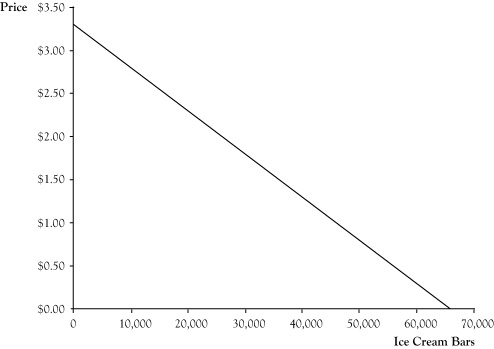
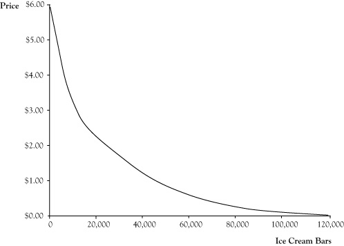
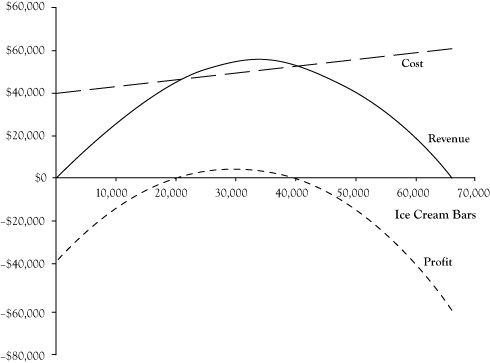

In the preceding analyses of the ice cream venture, we assumed ice cream bars would be priced at $1.50 per unit based on the price that was charged in the previous summer. The students can change the price and should evaluate whether there is a better price for them to charge. However, if the price is lowered, the breakeven level will increase and if the price is raised, the breakeven level will drop, but then so may the customer demand.
To examine the impact of price and determine a best price, we need to estimate the relationship between the price charged and the maximum unit quantity that could be sold. This relationship is called a demand curveThe relationship between the price charged and the maximum unit quantity that can be sold.. Demand curves generally follow a pattern called the law of demandIncreases in price result in decreases in the maximum quantity that can be sold., whereby increases in price result in decreases in the maximum quantity that can be sold.
We will consider a simple demand curve for the ice cream venture. We will assume that since the operator of the business last year sold 36,000 units at a price of $1.50 that we could sell up to 36,000 units at the same price this coming summer. Next, suppose the students had asked the prior operator how many ice cream bars he believes he would have sold at a price of $2.00 and the prior operator responds that he probably would have sold 10,000 fewer ice cream bars. In other words, he estimates his sales would have been 26,000 at a price of $2.00 per ice cream bar.
To develop a demand curve from the prior operator’s estimates, the students assume that the relationship between price and quantity is linear, meaning that the change in quantity will be proportional to the change in price. Graphically, you can infer this relationship by plotting the two price-quantity pairs on a graph and connecting them with a straight line. Using intermediate algebra, you can derive an equation for the linear demand curve
P = 3.3 − 0.00005 Q,where P is price in dollars and Q is the maximum number of ice cream bars that will sell at this price. Figure 2.3 "Linear Demand Curve for Ice Cream Bar Venture" presents a graph of the demand curve.
Figure 2.3 Linear Demand Curve for Ice Cream Bar Venture
It may seem awkward to express the demand curve in a manner that you use the quantity Q to solve for the price P. After all, in a fixed price market, the seller decides a price and the buyers respond with the volume of demand. Mathematically, the relationship for ice cream bars could be written
Q = 66,000 − 20,000 P.However, in economics, the common practice is to describe the demand curve as the highest price that could be charged and still sell a quantity Q.
The linear demand curve in Figure 2.3 "Linear Demand Curve for Ice Cream Bar Venture" probably stretches credibility as you move to points where either the price is zero or demand is zero. In actuality, demand curves are usually curved such that demand will get very high as the price approaches zero and small amounts would still sell at very high prices, similar to the pattern in Figure 2.4 "Common Pattern for Demand Curves". However, linear demand curves can be reasonably good estimates of behavior if they are used within limited zone of possible prices.
Figure 2.4 Common Pattern for Demand Curves
We can use the stated relationship in the demand curve to examine the impact of price changes on the revenue and profit functions. (The cost function is unaffected by the demand curve.) Again, with a single type of product or service, revenue is equal to price times quantity. By using the expression for price in terms of quantity rather than a fixed price, we can find the resulting revenue function
R = P Q = (3.3 − 0.00005 Q) Q = 3.3 Q − 0.00005 Q2.By subtracting the expression for the cost function from the revenue function, we get the revised profit function
π = (3.3 Q − 0.00005 Q2) − (40,000 + $0.3 Q) = –0.00005 Q2 + 3 Q − 40,000.Graphs for the revised revenue, cost, and profit functions appear in Figure 2.5 "Graphs of Revenue, Cost, and Profit Functions for Ice Cream Bar Venture for Linear Demand Curve". Note that the revenue and profit functions are curved since they are quadratic functions. From the graph of the profit function, it can be seen that it is possible to earn an economic profit with a quantity as low as 20,000 units; however, the price would need to be increased according to the demand curve for this profit to materialize. Additionally, it appears a higher profit is possible than at the previously planned operation of 36,000 units at a price of $1.50. The highest profitability appears to be at a volume of about 30,000 units. The presumed price at this volume based on the demand curve would be around $1.80.
Figure 2.5 Graphs of Revenue, Cost, and Profit Functions for Ice Cream Bar Venture for Linear Demand Curve
